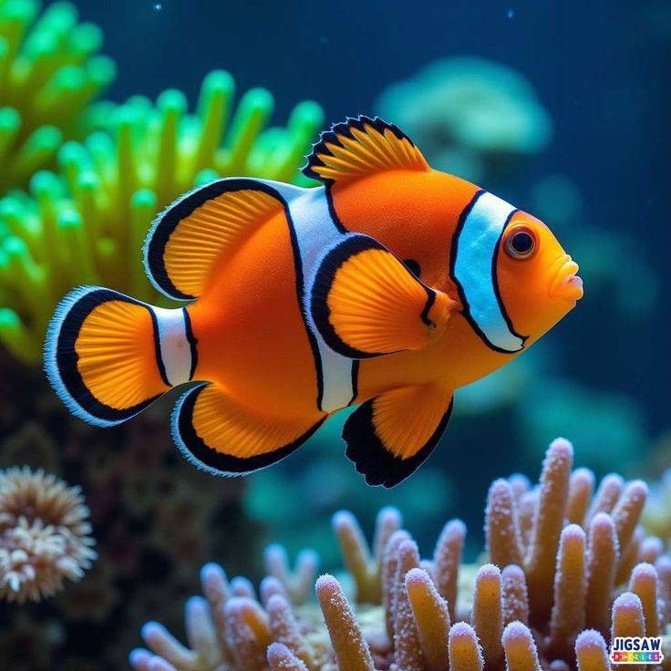
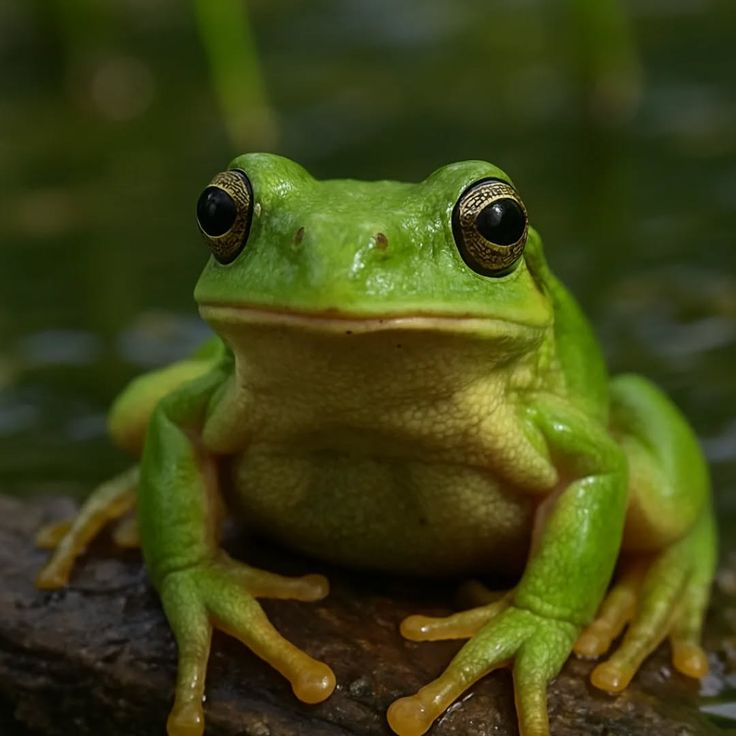
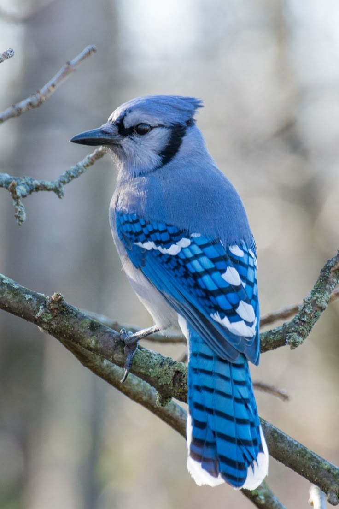
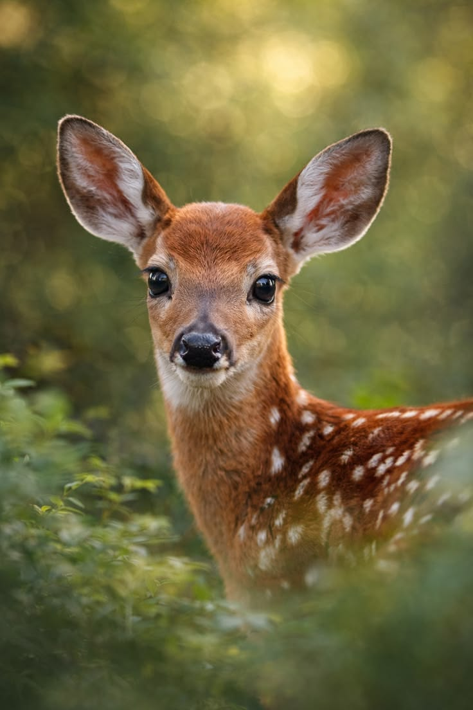

Peces
Animales acuáticos que respiran por sus branquias y se desplazan con sus aletas.
Los animales vertebrados son aquellos que poseen columna vertebral. Sus principales grupos son: Peces, Anfibios, Reptiles, Aves y Mamíferos.

Animales acuáticos que respiran por sus branquias y se desplazan con sus aletas.

Viven parte en el agua y parte en la tierra. Pasan por metamorfosis.

De sangre fría, piel seca y escamosa. Incluyen serpientes, tortugas y lagartos.

Cuerpo cubierto de plumas, pico y gran capacidad de vuelo.

Tienen pelo y producen leche para sus crías. Habitan en muchos ecosistemas.
Los vertebrados forman parte del filo cordados y se distinguen por tener un esqueleto interno, el cual les proporciona soporte y permite mayor movilidad. Incluyen desde peces y anfibios hasta aves y mamíferos. Descubre sus características y sus grupos.